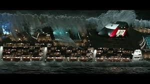
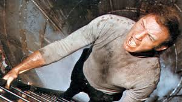
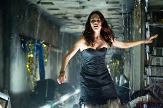
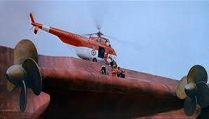

En el Atlántico Norte, a bordo del trasatlántico Poseidón comienza la fiesta de Nochevieja.
Una gigantesca ola de 30 metros de altura se dirige hacia la nave a gran velocidad. Los intentos para desviar el barco y evitar el choque son inútiles.
El crucero Poseidón, uno de los mejores de su clase, con 800 camarotes y 13 cubiertas, se ve afectado por una ola de 30 metros que lo voltea...
La electricidad falla, se rompen tuberías de gas causando incendios...
Deben atravesar paredes, sortear obstáculos y enfrentar el hundimiento del barco.
Finalmente logran escapar a una balsa inflable y son rescatados gracias al GPS del barco.
La película Poseidón (2006) incluye una aparición de Fergie, fue nominada a un Oscar por efectos especiales...
Existen versiones en 1972, 2005 y esta de 2006 con efectos mejorados.
La película fue destacada por sus efectos especiales, recibió críticas mixtas, y recaudó más de 181 millones de dólares.